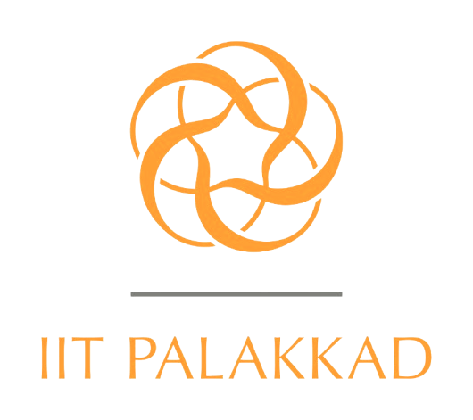

| Project | Funding Agency | Duration | Amount |
|---|---|---|---|
| An Accurate and Efficient Parallel R-C Digitizer for Moisture Sensing | SRG-SERB | Dec 2020 - Dec 2022 | 28 Lakh (INR) |
| Cyber-Physical Systems in Collaboration with Artificial Intelligence for Smart Agriculture | Co-DSTPI | July 2021 - Sept 2025 | 374 Lakh (INR) |
| Design, Development and Validation of Smart Weather Station for Crop Yield Enhancement | CSR-Western India KINFRA Ltd. | Feb 2023 – Mar 2023 | 2.7 Lakh (INR) |
| Smart-Agri-Tech: Development and Testing of Smart Farming | PI Institute Project | Sept 2021 – Aug 2025 | 170 Lakh (INR) |
| Detector and alarm systems for fence breaches | CSR & TECHIN | Dec 2021 – June 2022 | 2 Lakh (INR) |
| Design and development of a portable emergency ventilator for COVID-19 patients (Electrical and Control aspect) | CSR-Federal Bank | April 2020 - Oct 2020 [completed] | 6 Lakh (INR) |
| Design and Development of a Single Sensing System for Efficient Estimation of Fuel Level, Dual-Axis Inclination and Fuel-Ethanol Composition | Exploratory Research Grant | June 2024 - December 2025 | 23.8 Lakh (INR) |
Details about facilities can be added here.